C++从 STL 中的队列开始说起
1. 前言
队列和栈一样，都是受限的数据结构。
队列遵循先进先出的存储原则，类似于一根水管，水从一端进入，再从另一端出去。进入的一端称为队尾，出去的一端称为队头。
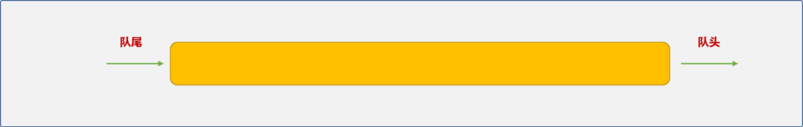
队列有 2 个常规操作：
- 入队：进入队列，数据总是从队尾进入队列。
- 出队：从队列中取出数据，数据总是从队头出来。
本文将先从STL的队列说起，然后讲解如何自定义队列。
2. STL 中的队列
STL的队列有：
queue(普通队列)。priority_queue(优先队列)。deque（双端队列）。
2.1 queue（普通队列）
queue是一个适配器对象，是对deque组件进行改造后的伪产品，可以在源代码中看出端倪。
构建queue时需要 2 个类型参数：
_Tp：存储类型说明。_Sequence：真正的底层存储组件，默认是deque。使用时，开发者可以根据需要指定其它的存储组件。
queue 类中提供了几个常规操作方法：
| 方法名 | 功能说明 |
|---|---|
back() |
返回最后一个元素 |
empty() |
如果队列空则返回真 |
front() |
返回第一个元素 |
pop() |
删除第一个元素 |
push() |
在末尾加入一个元素 |
size() |
返回队列中元素的个数 |
操作实例：
#include <iostream>
#include <queue>
using namespace std;
int main(int argc, char** argv) {
//创建并初始化队列
queue<int> myQueue;
//向队列添加数据
for(int i=0; i<5; i++) {
myQueue.push(i);
}
cout<<"查看队尾的数据"<<myQueue.back()<<endl;
cout<<"看队列的第一个数据"<<myQueue.front()<<endl;
//获取到队列的大小
int size=myQueue.size();
//所有数据出队列
for(int i=0; i<size; i++) {
cout<<myQueue.front()<<endl;
myQueue.pop();
}
cout<<"列是否为空:"<<myQueue.empty()<<endl;
return 0;
}
输出结果：
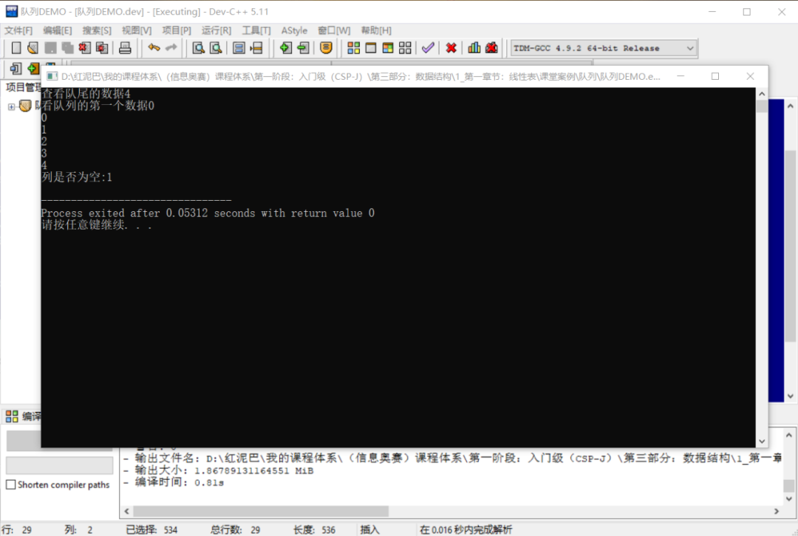
在上述创建queue时也可以指定list作为底层存储组件。
改变底层依赖组件，对业务层面的实现不会产生任何影响 ，这也是适配器设计模式的优点。
2.2 Priority Queues
从优先队列中删除数据时，并不一定是按先进先出的原则，而是遵循优先级法则，优先级高的数据先出队列，与数据的存储顺序无关。类似于现实生活中的VIP客户一样。
优先队列的常规方法：
| 方法 | 功能说明 |
|---|---|
empty() |
如果优先队列为空，则返回真 |
pop() |
删除第一个元素 |
push() |
加入一个元素 |
size() |
返回优先队列中拥有的元素的个数 |
top() |
返回优先队列中有最高优先级的元素 |
创建并初始化优先队列：
使用之前，先查阅 priority_queue的源代码。
template<typename _Tp, typename _Sequence = vector<_Tp>,typename _Compare = less<typename _Sequence::value_type> >
class priority_queue
{
//……
}
从源代码可知，优先队列属于容器适配器组件，本身并不提供具体的存储方案，使用时，需要指定一个容器对象用于底层存储(默认是 vector容器)。除此之外，还需要一个能对数据进行优先级判定的对象。
当存储的数据是基本类型时，可以使用内置的函数对象进行比较。
//升序队列
priority_queue <int,vector<int>,greater<int> > q;
//降序队列
priority_queue <int,vector<int>,less<int> > q_;
greater和less是内置的两个函数对象。
如果是对自定义类型进行比较，则需要提供自定义的比较算法，可以通过如下的 2 种方式提供：
lambda函数。
auto cmp = [](pair<int, int> left, pair<int, int> right) -> bool { return left.second > right.second; };
priority_queue<pair<int, int>, vector<pair<int, int>>, decltype(cmp)> pri_que(cmp);
- 自定义函数对象。要求函数对象中重写
operator()函数，如此，对象便能如函数一样使用。
struct com_{
bool operator()(const pair<int, int>& left, const pair<int, int>& right) {
return left.second > right.second;
}};
priority_queue<pair<int,int>,vector<pair<int, int>>,com_> pri_que2;
操作实例：
实例功能要求：使用优先队列存储运算符，获取运算符时，按运算符的优先级出队。
#include <iostream>
#include <queue>
using namespace std;
//运算符对象
struct Opt {
//运算符名
char name;
//运算符的优先级
int jb;
void desc() {
cout<<name<<":"<<jb<<endl;
}
};
//函数对象，提供优先级队列的比较法则
struct com {
bool operator()(const Opt& opt1, const Opt& opt2) {
return opt1.jb<opt2.jb;
}
};
int main(int argc, char** argv) {
priority_queue<Opt ,vector<Opt>,com> opt_que;
//添加运算符
Opt opt= {'+',1} ;
opt_que.push(opt);
opt= {'*',2} ;
opt_que.push(opt);
opt= {'(',3} ;
opt_que.push(opt);
opt= {')',0} ;
opt_que.push(opt);
//出队列
int size= opt_que.size();
for(int i=0; i<size; i++) {
Opt tmp=opt_que.top();
opt_que.pop();
tmp.desc();
}
cout<<"队列是否为空:"<<opt_que.empty()<<endl;
return 0;
}
输出结果：
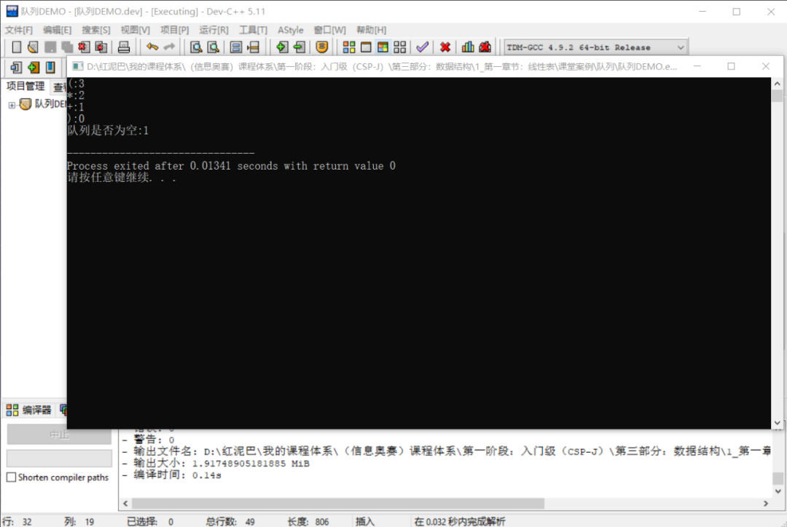
2.3 deque
前面的queue对象本质是在deque的基础上进行重新适配之后的组件，除此之外，STL中的stack也是……
deque也称为双端队列，在两端都能进行数据的添加、删除。可以认为deque是一个伸缩性很强大的基础功能组件，对其进行某些功能的屏蔽或添加，便能产生新组件。
deque的相关方法如下：
push_back()：在队尾添加数据。pop_back()：数据从队尾出队列。push_front()：在队头添加数据。pop_front()：数据从队头出队列。
如果只允许使用push_back()和pop_back()或push_front()和pop_front()方法，就可以模拟出栈的存储效果。类似的，如果禁用pop_back()和push_front()则可以模拟出普通队列的存储效果……
可能会问，为什么选择deque作为基础组件，难道它有什么先天性优势吗？
这个就需要从它的物理结构说起。
deque物理结构中的基本存储单位称为段，段是一个连续的可存储 8 个数据的顺序区域。一个deque对象由很多段组成，段与段在物理空间上并不相邻，而是通过一个中央控制段存储其相应地址。
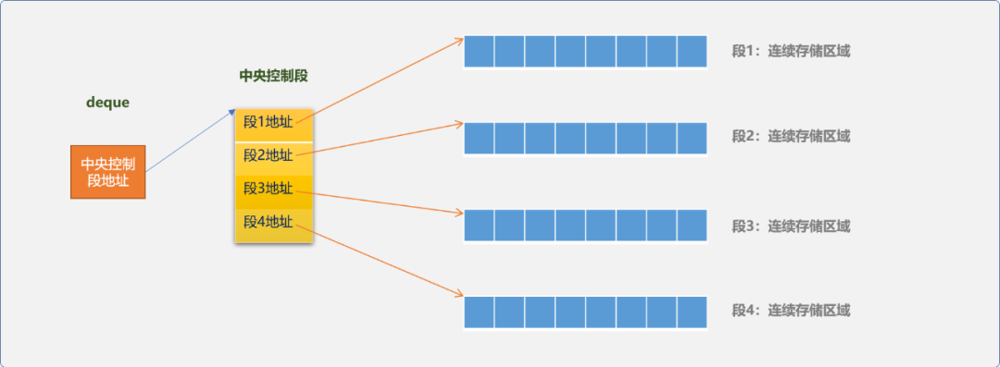
deque具有顺序存储的查询性能优势也具有链式存储的插入、删除方面的性能优势。因为它在物理结构上完美地融合了顺序存储思想和链式存储思想。
在一个段上进行数据查询是很快的，即使有插入和删除操作也只会对本段的性能有影响，而不会拖累整体性能。
操作实例：
#include <iostream>
#include <vector>
#include <deque>
using namespace std;
int main(int argc, char *argv[]) {
int ary[5] = {1, 2, 3, 4, 5};
//使用数组初始化 vector
vector<int> vec( &ary[0], &ary[4]+1 );
//使用 vector 初始化双端队列
deque<int> myDeque( vec.begin(), vec.end() );
//队头插入数据
myDeque.push_front( 0 );
//队尾插入数据
myDeque.push_back( 6 );
cout<<"查看队头数据 : "<<myDeque.front()<<endl;
cout<<"查看队尾数据: "<<myDeque.back()<<endl;
//双端队列支持迭代器查询
deque<int>::iterator iter = myDeque.begin();
while( iter != myDeque.end() ) {
cout<<*(iter++)<<' ';
}
cout<<endl;
//双端队列支持下标访问方式
cout<<"a[3] = "<<myDeque[3] << endl;
//支持迭代器删除
myDeque.erase( myDeque.begin() );
//删除头部删除
myDeque.pop_front();
// 删除尾部元素
myDeque.pop_back();
cout<<"查看队头数据: "<<myDeque.front()<<endl;
cout<<"查看队尾数据: "<<myDeque.back()<<endl;
return 0;
}
执行后输出结果：
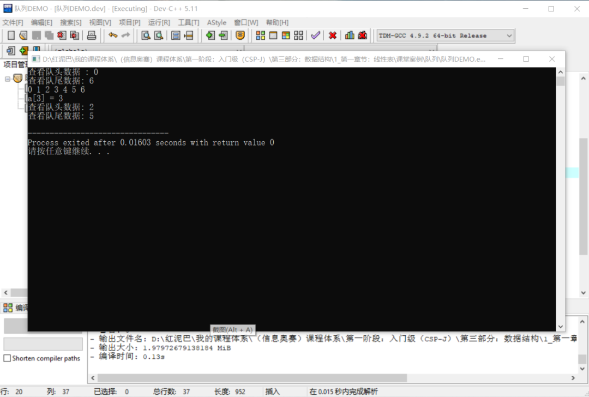
3. 自定义队列
队列有 2 种实现方案：
- 顺序实现，基于数组的实现方案。
- 链表实现，基于链表的实现方案。
3.1 顺序实现
顺序实现底层使用数组作为具体存储容器。实现之初，需要创建一个固定大小的数组。
3.1.1 思路
数组是开发式的存储容器，为了模拟队列，可以通过 2 个指针用来限制数据的存和取：
front：指向队头的指针，用来获取队头数据。总是指向最先添加的数据。rear：指向队尾的指针，用来在队尾添加数据。
初始，front和rear指针可以指向同一位置，可以是下标为0位置。如下图所示：
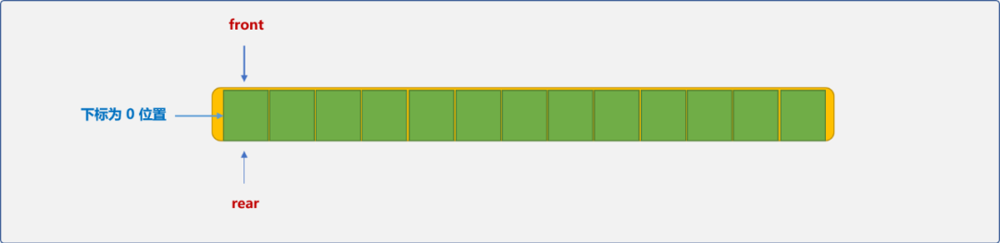
可以根据front和rear所指向位置是否相同，而判断队列是否为空。
入队操作：
- 将数据存储在
rear所指向位置，再把rear向右边移动一个位置（rear总是指向下一个可用的位置）。
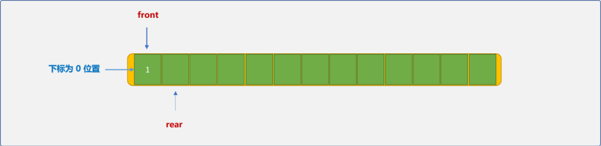
- 当
rear超出数组的边界，即下标为数组的长度时，表示队列已经满了。
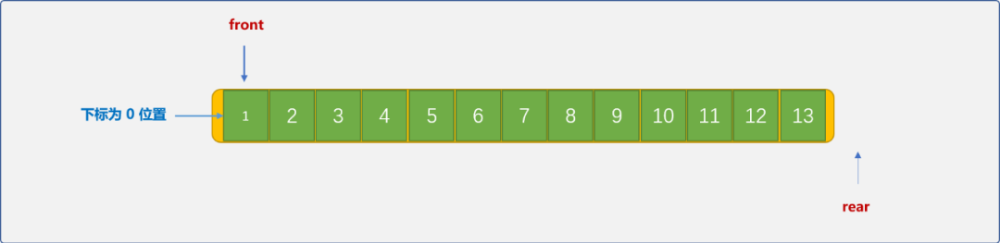
出队操作：
出队操作可以有 2 个方案。
front固定在下标为0的位置，从队列删除一个数据后，后续数据向前移动一位，并把rear指针向左移动一位。如下图是删除数据1后的演示图：
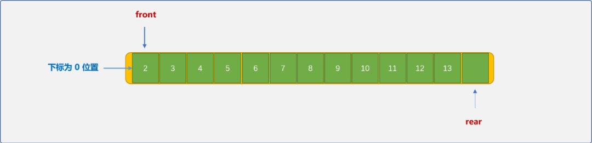
这种方案的弊端是，每删除一个数据，需要后续数据整体向左移动，时间复杂度为O(n)，性能偏低。
- 从
front位置处提取数据后，front指针向右边移动。
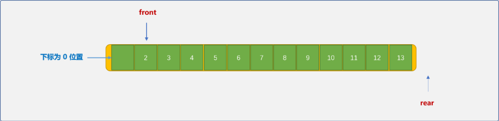
以front位置为队头，而不是以数组的绝对位置0为队头。这种方案的优势很时显，时间复杂度为O(1)。
但会出现假溢出的现象，如上图示，删除数据1后，留下了一个可用的空位置，因rear指针是向右移动的，并不知前面有空的位置，从而也无法使用此空位置。
针对于这种情况，可以让rear指针在超过下标界限后，重头再开始定位，这样的队列称为循环队列。
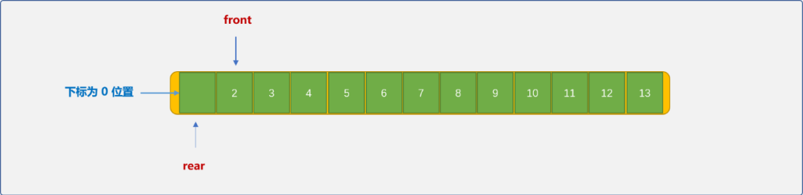
前文说过，当front和rear指针相同时，认定队列为空。在循环队列，当入队的速度快于出队速度时，rear指针是可以追上front指针的。如下图所示：
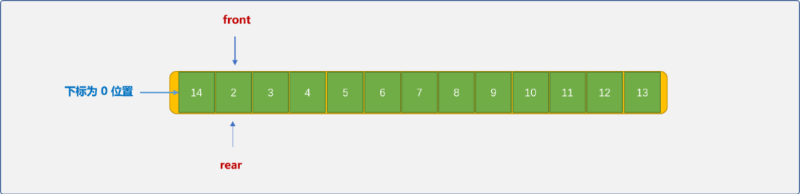
这时队列为满负荷状态。也就是说，front等于rear时，队列有可能是空的也有可能是满的。
可以使用 2 种方案解决这个问题：
- 计数器方案。使用计数器记录队列中的实际数据个数。当
num==0时队列为空状态，当num==size时队列为满状态。 - 留白方案：存储数据时，从
rear+1位置开始，而不是存储在rear位置。或者说下标为0的位置空出来。
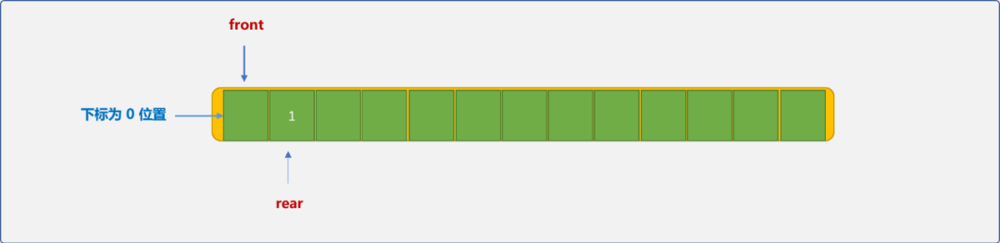
这样，当rear+1等于front时，可判定队列为满状态。
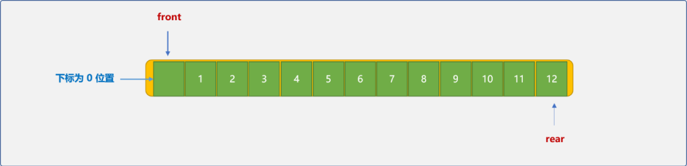
注意，在获取队头数据时，需要先把front向右移一位。
3.1.2 编码实现
循环队列类（留白方案）：
class MyQueue {
private:
//数组
int *queue;
int front;
int rear;
int size;
public:
//构造函数
MyQueue(int queueSize=10):size(queueSize),front(0),rear(0) {
this->queue=new int[queueSize];
}
//析构函数
~ MyQueue() {
delete[] queue;
}
//队列是否为空
bool isEmpty() {
return this->front==this->rear;
}
//数据入队列
bool push_back(int data) {
//需要判断队列是否有空位置
if (((this->rear+1)%this->size)!=this->front) {
//获取当前可存储位置
this->rear=(this->rear+1) % this->size;
//存储数据
this->queue[this->rear]=data;
return true;
}
return false;
}
//数据出队列
bool pop_front(int& data) {
//队列不能为空
if (this->rear!=this->front) {
//头指针向右移动
this->front=(this->front+1) % this->size;
data=this->queue[this->front];
return true;
}
return false;
}
//查看队头数据
bool get_front(int & data) {
//队列不能为空
if (this->rear!=this->front) {
//头指针向右移动
int idx=(this->front+1) % this->size;
data=this->queue[idx];
return true;
}
return false;
}
};
测试队列：
#include <iostream>
using namespace std;
int main(int argc, char *argv[]) {
MyQueue myQueue(5);
//向队列中压入 4 个数据,注意，有一个位置是空着的
for(int i=0; i<5; i++) {
myQueue.push_back(i);
}
int data;
myQueue.get_front(data);
cout<<"队头数据："<<data<<endl;
//队列已经满，测试是否还能压入数据
int data_=5;
bool is= myQueue.push_back(data_);
if(is)
cout<<"压入成功"<<endl;
else
cout<<"压入失败"<<endl;
//把队列中的所有数据删除
int tmp;
for(int i=0; i<4; i++) {
is= myQueue.pop_front(tmp);
if(is)
cout<<tmp<<endl;
}
}
输出结果：
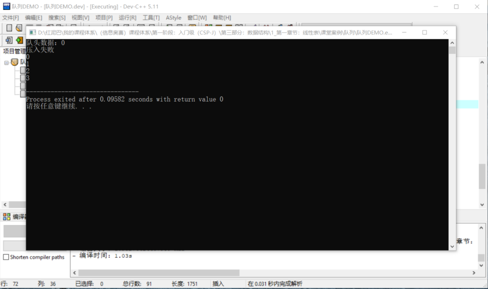
3.2 链式实现
链式实现队列时，数据可以从头部插入然后从尾部删除，或从尾部插入再从头部删除。本文使用尾部插入，头部删除方案。
- 链表实现时，需要头指针也需要尾指针。初始值都为
NULL。
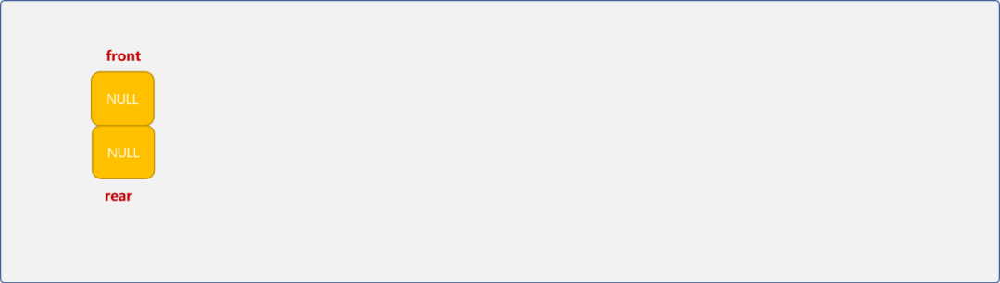
- 数据从尾部插入（每次添加的新结点成为新的尾结点），从头部删除。
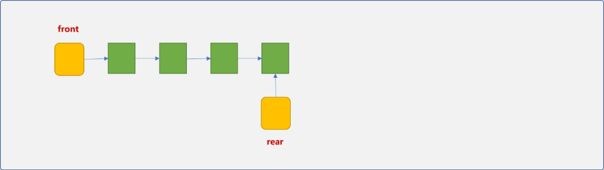
链式实现的过程简单清晰，就是在单链表上的数据添加和删除操作，具体细节这里就不再废话，直接上代码：
#include <iostream>
using namespace std;
//链表的结点类型
struct QueueNode {
int data;
QueueNode* next;
QueueNode() {
this->next=NULL;
};
};
class MyQueue_ {
private:
//数组
QueueNode* front;
QueueNode* rear;
public:
//构造函数
MyQueue_() {
this->front=NULL;
this->rear=NULL;
}
//析构函数
~ MyQueue_() {
QueueNode* p, *q;
p=front;
while(p) {
q=p;
p=p->next;
delete q;
}
front=NULL;
rear=NULL;
}
//队列是否为空
bool isEmpty() {
return this->front==NULL && this->rear==NULL;
}
//数据入队列
bool push_back(int data) {
//新结点
QueueNode* p=new QueueNode();
if(p) {
//申请结点成功
p->data=data;
if(rear) {
rear->next=p;
rear=p;
} else
front=rear=p;
return true;
} else
return false;
}
//数据出队列
bool pop_front(int& data) {
QueueNode* p;
if(!isEmpty()) {
//判断队列是否为空
p=front;
data=p->data;
front=front->next;
if(!front)
rear=NULL;
delete p;
return true;
}
return false;
}
//查看队头数据
bool get_front(int & data) {
if(!isEmpty()) {
data=front->data;
return true;
} else
return false;
}
};
int main(int argc, char *argv[]) {
MyQueue_ myQueue;
//向队列中压入 4 个数据,注意，有一个位置是空着的
for(int i=0; i<5; i++) {
myQueue.push_back(i);
}
int data;
myQueue.get_front(data);
cout<<"队头数据："<<data<<endl;
//队列已经满，测试是否还能压入数据
int data_=5;
bool is= myQueue.push_back(data_);
if(is)
cout<<"压入成功"<<endl;
else
cout<<"压入失败"<<endl;
//把队列中的所有数据删除
int tmp;
for(int i=0; i<4; i++) {
is= myQueue.pop_front(tmp);
if(is)
cout<<tmp<<endl;
}
}
输出结果：
4. 总结
本文讲解了STL中的队列组件，以及如何通过顺序表和链表模拟队列。